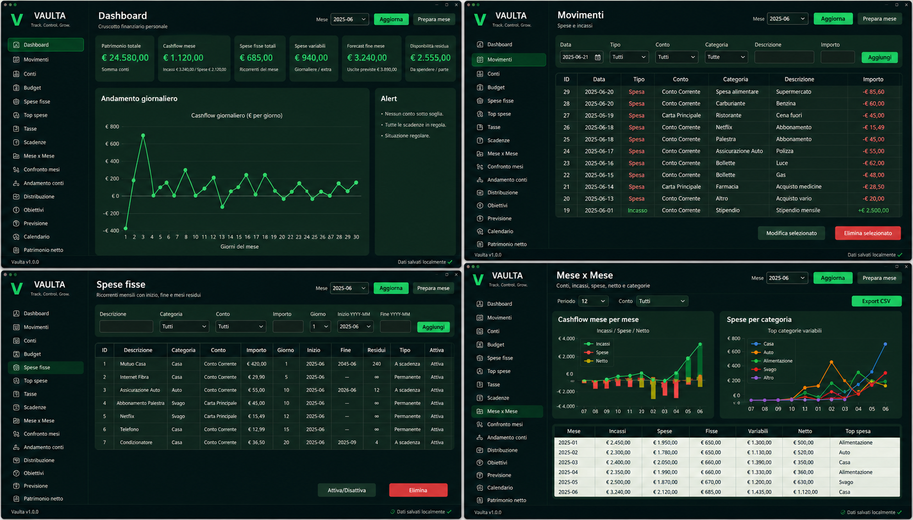
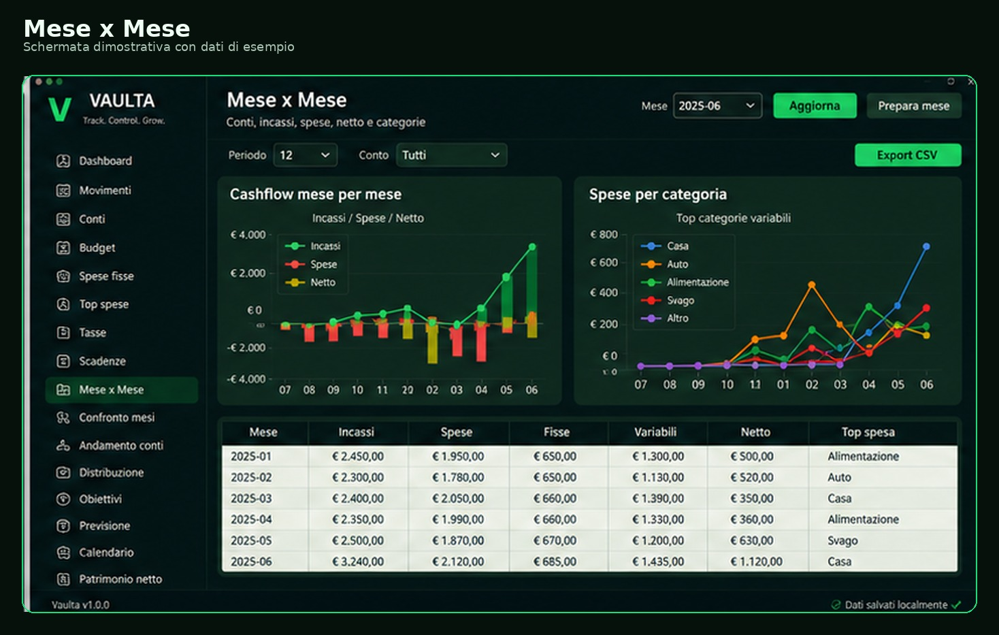

Dashboard
KPI, forecast, patrimonio, alert e riepilogo rapido.
Gestisci conti, movimenti, spese fisse, budget, tasse, obiettivi e report in un'unica applicazione desktop. I dati restano sul tuo computer.

Funzioni principali
Vaulta trasforma i dati sparsi in una vista chiara: saldo, cashflow, spese, scadenze e obiettivi.
KPI, forecast, patrimonio, alert e riepilogo rapido.
Corrente, risparmi, carte, contanti e altri patrimoni.
Entrate, uscite, trasferimenti, categorie e descrizioni.
Ricorrenze, fine validità e generazione mensile.
Limiti mensili, percentuali, card e avanzamento.
Importi, pagamenti parziali, residui e scadenze.
Mesi a confronto, andamento conti e patrimonio.
Backup manuali e ZIP completi per aggiornare in sicurezza.
Privacy
Vaulta lavora offline: il database viene creato nella cartella dell'app e resta sul tuo PC. Puoi fare backup, spostarlo o duplicarlo quando vuoi.
Screenshot
Schermate reali con dati dimostrativi.



Download
Dopo l'acquisto ricevi i pacchetti per installare e avviare Vaulta.
Scarica lo ZIP, estrai la cartella e avvia Vaulta.exe.
Nota: Windows SmartScreen può mostrare un avviso perché l'app non è ancora firmata. Se proviene dalla pagina ufficiale, scegli “Altre informazioni” → “Esegui comunque”.Scarica lo ZIP, estrai la cartella e avvia lo script avvia_linux.sh.
Il pacchetto Linux richiede Python 3 e installa le dipendenze indicate in requirements.txt.Paghi una volta. Nessun abbonamento. Dati salvati localmente.
Pagamento tramite Payhip/PayPal.
Interfaccia rifinita, icone complete nelle pagine, wizard corretto, splash Windows sistemato, build Windows/Linux e struttura più pulita.
Questa è la base stabile per la pubblicazione e i futuri aggiornamenti 4.x.
FAQ
No. Vaulta funziona offline. Internet serve solo per scaricare, acquistare o ricevere aggiornamenti.
Nella cartella locale dell'app, dentro il database SQLite di Vaulta.
No. Vaulta è pensato come licenza permanente.
Sì. Puoi creare, selezionare, duplicare e gestire database diversi.
Sì. Gli aggiornamenti e le funzioni future possono essere valutati su richiesta.